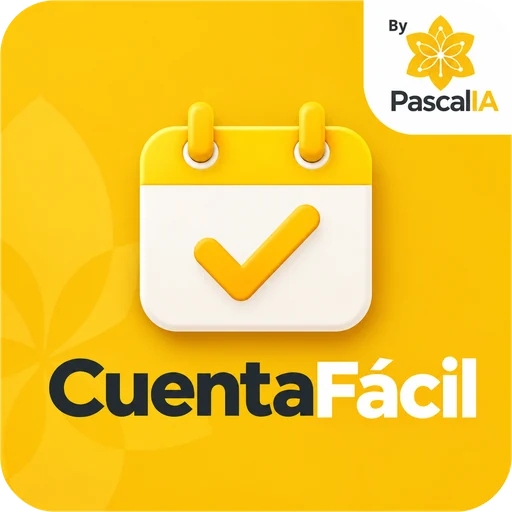
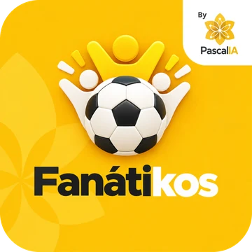
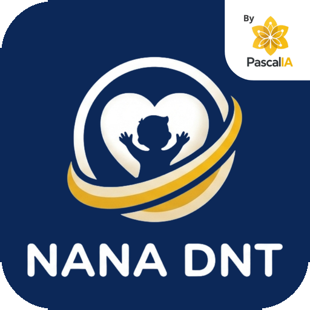

Consultoría, desarrollo y capacitación en tecnología e inteligencia artificial, a la medida.
Portafolio de servicios y soluciones · 2026
Conocimiento · Tecnología · Personas · Resultados
Quiénes somos
Pascal + IA
PascalIA es una empresa colombiana que crea soluciones de tecnología e inteligencia artificial a la medida para organizaciones y personas. Hablas directamente con quien construye la solución: soluciones que funcionan pronto y se adaptan a cada cliente.
El origen del nombre
Blaise Pascal (1623–1662)
Matemático, físico, inventor y filósofo: un polímata que conectó muchas disciplinas para resolver problemas complejos.
La Pascalina. A los 19 años inventó una de las primeras calculadoras mecánicas de la historia para aliviar el trabajo de su padre, que pasaba noches sumando impuestos. Eso hacemos: herramientas que le quitan a las personas la carga operativa.
La polimatía. Miramos cada problema desde varios ángulos (procesos, datos y personas) para entregar soluciones completas.
Nuestro objetivo
Llevar la tecnología y la inteligencia artificial a organizaciones y personas, para quitarles el trabajo pesado y dejarles tiempo para lo que importa: empresas que evolucionan, personas que florecen.
Identidad
La flor de PascalIA
Una flor es crecimiento, ramificación y florecimiento. Sus seis pétalos están unidos por venas que terminan en nodos, como una red neuronal: la naturaleza orgánica y las conexiones de la inteligencia artificial en un solo símbolo.
Representa cómo la tecnología bien implementada hace florecer el potencial de una organización.
El amarillo nos diferencia en un sector saturado de azul y negro: transmite energía, optimismo e innovación, y le quita el miedo al cambio a los equipos que aprenden.
#FFC107
Amarillo PascalIAAcción, energía, claridad
#1F1F1F
GrafitoSolidez y resultados
#FFF8E1
CremaCalidez y cercanía
#E9E9E9
Gris claroOrden y aire
Nuestros valores
Innovación con propósitoTecnología que resuelve algo real.
Soluciones humanasPensadas para quien las usa.
Crecimiento sostenibleQue dure y que escale.
Conocimiento sin límitesLo que sabemos, lo compartimos.
Servicios
Tres formas de crecer contigo
Analizamos, desarrollamos y capacitamos, para que tu organización florezca.
El Pensamiento Pascal
Consultoría
Analiza · Conecta · Transforma
Diagnóstico de procesos y transformación digital. Encontramos los cuellos de botella cruzando procesos, datos y personas, y conectamos cada problema con la herramienta o la IA que lo puede resolver o automatizar.
Diagnóstico de procesos
Transformación digital
Hoja de ruta de automatización con IA
La Ingeniería Pascalia
Desarrollo
Automatiza · Integra · Escala
Construimos soluciones a la medida, integradas en portales digitales unificados, eficientes y exactos.
Chatbots y asistentes de WhatsApp con IA
Dashboards e indicadores
Creación y automatización de documentos
Apps de campo, CRM y sistemas de reservas
Tecnologías QR y NFC en los procesos
El Florecimiento
Capacitación
Aprende · Aplica · Florece
Formación presencial y virtual en herramientas de IA para empresarios, empleados, personal de oficina y cualquier persona que quiera aplicarlas en su trabajo, para que la tecnología se adopte con éxito y sin resistencia.
Presencial y virtual
Talleres prácticos
Empresas y público general
Soluciones listas
Lo que tenemos para ti
MesaViva
Tu restaurante, completo
Software para restaurantes que une la venta, la cocina y la experiencia del cliente.
POS y factura electrónica
Carta QR y pedidos por WhatsApp
Mesas, meseros y cocina
Mesa NFC y pago por persona
Domicilios y CRM
Restaurantes y cadenas

CuentaFácil
Tu cuenta de cobro, por WhatsApp
Pascal acompaña a los contratistas por WhatsApp: cada día le cuentan lo que hicieron y al cierre reciben el informe y la cuenta de cobro listos para revisar y firmar.
Reporte diario con texto, foto o nota de voz
Actividades organizadas por obligación
Informe, cuenta de cobro y soportes
El contratista revisa y firma: Pascal nunca inventa
Contratistas de prestación de servicios

Fanátikos
Tu campeonato, como en las ligas grandes
Gestión completa de campeonatos de fútbol aficionado y red para la hinchada.
Inscripción de equipos, árbitros y jugadores
Planilla del árbitro en el celular y acta en PDF firmada
Directores: jugadores, multas, sanciones y reclamaciones
Tabla en vivo, estadísticas y afiches para redes con patrocinadores
Organizadores de campeonatos y ligas
Flota
Tus vehículos, al día desde el celular
Itinerario digital de vehículos y conductores para cualquier empresa con flota.
Salidas y llegadas con GPS y foto
Funciona sin señal
Checklist del vehículo
Planilla de tiempos lista para firma
Empresas con flota de vehículos

NANA DNT
Seguimiento nutricional infantil
Seguimiento nominal del riesgo y la desnutrición aguda en menores de 5 años para IPS de primer nivel.
Caso por caso
Menores de 5 años
Conforme a la normativa vigente del sector
Sector salud: IPS, ESE y secretarías
Páginas web
Tu página, desde cero
Hacemos cualquier tipo de página web y nos especializamos en menús digitales. Visitamos al cliente, entendemos qué vende y qué necesita, y la implementamos.
Adquisición del dominio
Diseño a la medida
Mantenimiento
Menús digitales
Comercios, restaurantes y empresas
Tecnología NFC
Acerca el celular y listo
Analizamos las necesidades del negocio e implementamos NFC: una tecnología rápida y atractiva para los clientes.
Carta y pedidos al instante
Promociones y fidelización
Integración con los procesos del negocio
Comercios y restaurantes
Gamificación
Tu marca, convertida en juego
Llevamos dinámicas de juego a tu marca para hacerla más dinámica y que tus clientes vuelvan.
Retos
Puntos
Premios
Marcas y comercios
Pascal
Tu asistente de confianza
Pascal es la cara de PascalIA: el asistente que atiende por WhatsApp, organiza la información y redacta borradores, siempre con revisión humana.
La IA asiste, las personas deciden. Todo borrador o sugerencia termina en revisión y aprobación de una persona.
Respeto por los datos. La información se trata conforme a nuestra Política de tratamiento de datos.
Cómo trabajamos
Conversamos. Nos cuentas qué te quita tiempo.
Proponemos. Una solución con alcance claro.
Construimos contigo. Avances cortos que puedes probar.
Acompañamos. Capacitamos a tu equipo y seguimos cerca.